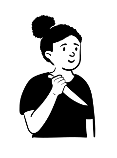

You probably can't point to the moment it started. There was no single email, no restructure, no meeting where someone said the word "redundant." Just a slow, accumulating sense that the ground is moving. A new tool every few weeks. A junior who ships in an afternoon what used to take you a week. A LinkedIn feed that will not stop telling you to adapt or be left behind.
And here is the part most people don't admit out loud: it isn't the work that's wearing you down. It's the watching. The quiet, all-day background process of checking whether you still matter.
For a long time that feeling sat in the folder marked "career stress," something you were supposed to manage at work and leave there. A study published in 2025 suggests it doesn't stay there at all. It traced exactly where the fear of being replaced by AI goes once it leaves your desk, and the answer is uncomfortable. It goes home with you.
What the study measured
Researchers Jiansong Zheng and Tao Zhang surveyed 303 employees and published their findings in the journal Behavioral Sciences. They were interested in something they called AI awareness, which they defined simply as the extent to which a person believes their own job could be replaced by artificial intelligence. Not whether AI is good or bad. Just how present that specific possibility is in your head.
Then they measured emotional exhaustion, the core ingredient of burnout. The feeling of being used up, of having nothing left to give by the end of the day. The headline finding is blunt: the higher a person's AI awareness, the more emotionally exhausted they were.
On its own that is not surprising. Worry is tiring. What makes the study worth your attention is not that it found a link. It is the path it found between the two.
The chain nobody warns you about
The exhaustion did not come straight from the fear. It travelled through two steps in between, in a specific order.
First, AI awareness raised job insecurity. The more replaceable you believe you are, the less safe your future feels. That part is intuitive.
The second step is the one that lands. That job insecurity then increased work interference with family. And it was that interference, the study found, that actually produced the emotional exhaustion. The fear didn't tire you out by sitting at your desk. It tired you out by coming home and getting between you and the people you live for.
The cost of AI anxiety is not really paid at work. It is paid at the dinner table, where you are physically present and mentally still defending your relevance, and the people closest to you quietly get the leftover version of you.
Read that chain again, because it reframes the whole thing. You have probably been treating this as a work problem to be solved with more upskilling, more hours, more proof that you are not obsolete. The research suggests the upskilling treadmill is not the cure. It is part of how the fear reaches your home in the first place. Every evening you spend anxiously keeping up is an evening your family spends with someone who is technically there.

It isn't just you, and it isn't softening
If you have been quietly assuming you are the only one in your peer group who feels this, the wider evidence says otherwise. A 2026 survey of more than 1,500 employees across five countries, run by Spring Health, found that roughly a quarter reported worse mental health from AI-driven information overload, and a similar share reported a reduced sense of control over their own future. A broad 2026 scoping review in Frontiers in Public Health reached the same conclusion from a higher altitude: across study after study, AI and digitalisation at work were consistently tied to job insecurity, technostress, blurred work and home boundaries, and rising anxiety.
Notice the through line in all of it. Job insecurity. Blurred boundaries. Loss of control. These are not really technology problems. They are the human nervous system trying to stay safe in a world that keeps changing the rules mid-game. The tools are new. The ache is very old.
Why this hits senior people hardest
There is a particular cruelty in how this lands on experienced professionals. The more years you have invested in becoming good at a specific thing, the more of your identity is fused to it. When the thing you mastered starts to look automatable, the threat is not only financial. It reaches something deeper than your salary. It reaches your sense of who you are and what you are for.
And senior people are usually the ones who hide it best. You are expected to be the steady one, the person who reassures the team that everything is fine. So the fear goes underground, gets no airtime at work, and surfaces at 9pm as a short temper, a distracted silence, a third hour of doom-scrolling AI news while your partner talks to the back of your head. The composure at work and the absence at home are the same problem wearing two faces.
What actually helps
The instinct is to fight a fog by working harder. The research points the other way. What loosens this particular knot is not more effort. It is giving the fear edges, restoring some sense of control, and refusing to let the worry run as a silent open loop in the background of your evenings.
Give the fear a shape. A vague dread that AI might come for you is far more exhausting than a clear-eyed read of how exposed your actual role is. Most jobs are a bundle of tasks, and AI touches some of them deeply and others barely at all. Naming which is which turns a storm cloud into a weather report. Clearhead's free AI Automation & Relevance Index is built for exactly this. It walks you through your real responsibilities and gives the fear an honest outline instead of letting it stay a fog.
Find out where your bandwidth is actually going. The vigilance the study describes is not free. It runs quietly in the background and eats the attention you think you are giving your family. The Cognitive Load & Bandwidth Index helps you see how much of your mental capacity is already spoken for, which is often the first step to taking some of it back.
Check whether the problem is fear or fit. Sometimes AI anxiety is the messenger for a deeper truth, that the work itself has drifted out of line with what you actually want. The Career Friction & Alignment Audit helps you tell the difference between a passing fear and a real misalignment, so you stop treating one as the other.
Protect one real boundary. The study's whole mechanism runs through work bleeding into home. You do not have to fix your entire life to interrupt that. Even one genuinely protected stretch of the evening, where the laptop is shut and the AI news goes unread, breaks the exact link the research identified. Defended imperfectly, it still counts.
Say it out loud to a person. This is the one most senior professionals skip, because admitting the fear feels like admitting weakness. But a worry that lives only in your own head has no edges and no exit. Spoken to someone who is actually listening, it tends to shrink to its real size, which is almost always smaller than the 2am version. That is most of what coaching and counselling actually are. Not advice from a machine, and not reassurance on tap. A real conversation, with a real person on the other side, who is there to help you think.
The quiet point underneath all of it
The thing worth holding onto is this. The exhaustion you feel is not proof that you are falling behind. The study suggests it is proof of how much you care, routed through a fear you were never meant to carry alone, leaking into the part of your life that matters most. You can keep paying that cost at the dinner table. Or you can give the fear edges, draw one boundary, and let one honest conversation do the work that another hour of upskilling never will.
Common questions about AI anxiety at work
Why does worrying about AI at work make me so tired?
A 2025 study in Behavioral Sciences found that the more you believe your job could be replaced by AI, the more emotionally exhausted you become. The tiredness is not only the workload. It is the low, constant vigilance of watching your own relevance, which the researchers found runs through job insecurity and spills into home life before it ever shows up as exhaustion.
Is AI anxiety a real mental health issue?
Yes. Peer-reviewed research in 2025 and 2026 links the fear of being replaced by AI to higher job insecurity, technostress, emotional exhaustion, and depressive symptoms. A 2026 survey of more than 1,500 employees found that around a quarter reported worse mental health from AI-driven information overload and a reduced sense of control over their future.
How does AI job fear affect my family life?
The 2025 study traced a specific chain: AI awareness raises job insecurity, job insecurity increases work interference with family, and that interference is what drives emotional exhaustion. In plain terms, the worry follows you home. You are physically at dinner but mentally still defending your relevance, and the people closest to you get the leftover version of you.
What actually helps with AI anxiety at work?
Giving the fear edges helps more than fighting the fog. Honestly mapping how exposed your specific role is, protecting a real boundary between work and home, and talking it through with another person all reduce the open-loop vigilance the research links to exhaustion. Clearhead's free AI Relevance Index and Cognitive Load tools are a practical first step, and a single honest conversation often does the rest.
References
- Zheng, J., & Zhang, T. (2025). Association Between AI Awareness and Emotional Exhaustion: The Serial Mediation of Job Insecurity and Work Interference with Family. Behavioral Sciences, 15(4), 401.
- AI awareness and the breakdown of daily recovery: a spillover pathway to work and family strain (2025). Frontiers in Public Health.
- Impact of artificial intelligence and work digitalization on mental health and occupational well-being: a scoping review (2026). Frontiers in Public Health.
- Spring Health (2026). The Hidden Cost of AI Anxiety: What HR Leaders Need to Know About This Workplace Stressor.
If something in this piece felt like it was written about you — that’s worth listening to.
I keep a free, unhurried half hour for exactly this. No forms, no pitch at the end, no obligation to come back. Just a quiet space to say out loud whatever this stirred up — to someone who knows how to listen.
Book a quiet half hour — it’s free →Online or by phone. Whatever you share stays between us.